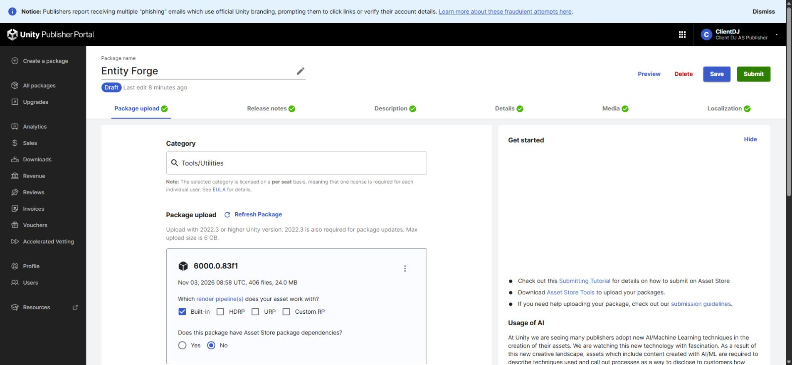
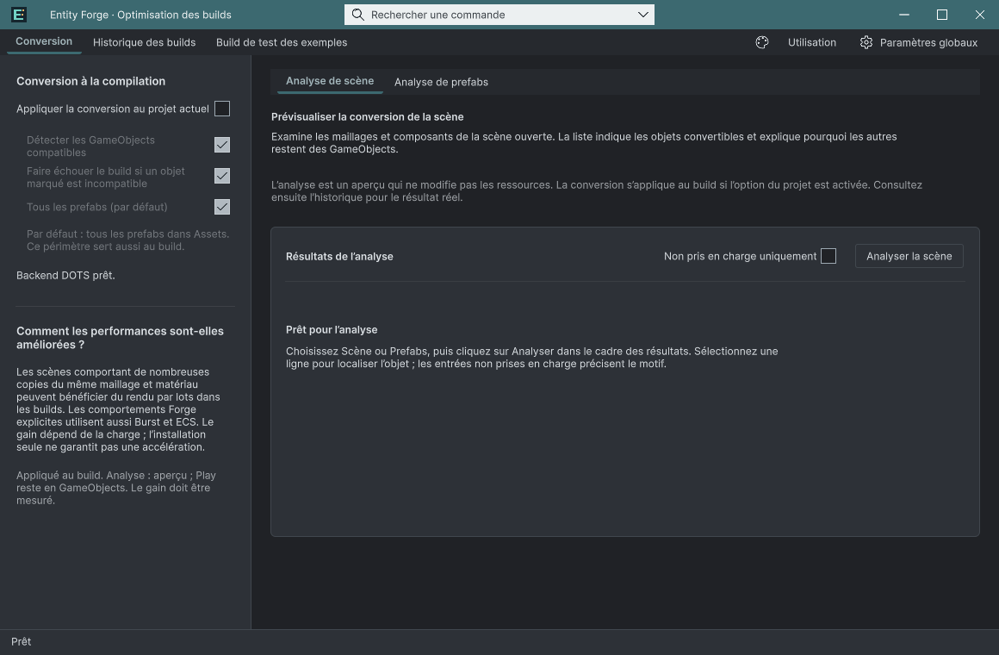
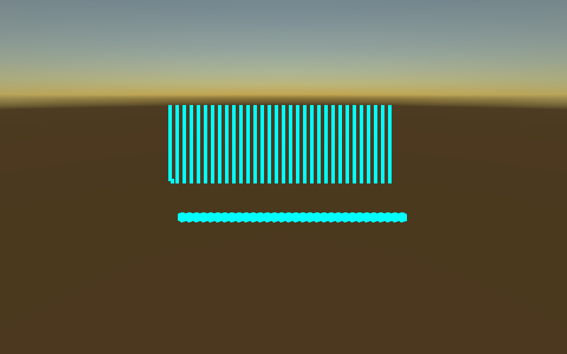
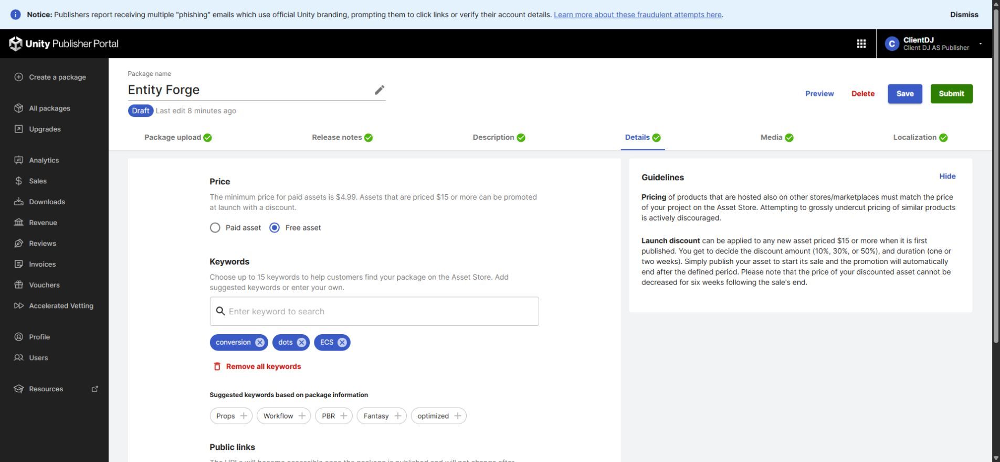
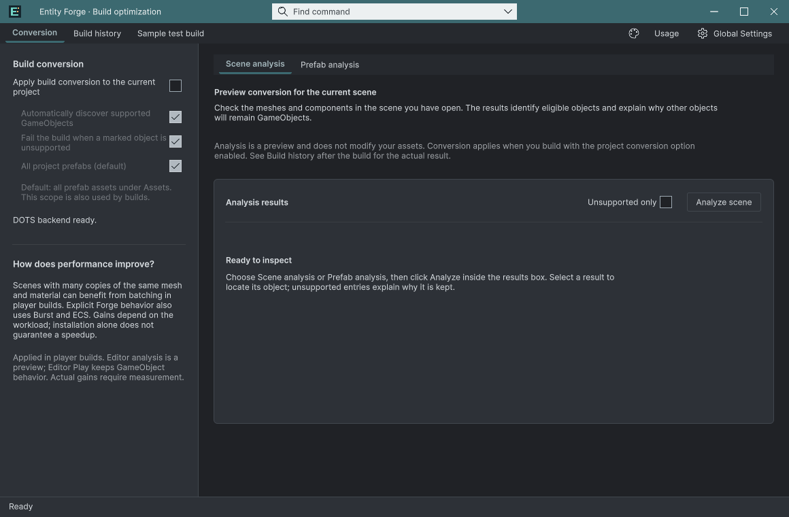

Tracefolio REPORTS & ISSUES
Tracefolio REPORTS & ISSUESEntityForge 0.3.1-preview 최종 설치·재검증·업로드 확인
검증 대기최종 고정본의 새 프로젝트 설치·공식 검사와 SDK 업로드를 확인했습니다. 심사 제출은 실행하지 않았으며 공통 네이티브 입력 확인은 남아 있습니다.
작업 결과
0.3.1-preview 최종 패키지 업로드와 새 빈 프로젝트 재설치를 확인했습니다. Entity Forge는 무료입니다. Submit은 누르지 않았습니다.

최신 업로드의 날짜·용량·제품명을 실제 화면에서 대조했습니다. 이전 v1.0.0의 일부 캡처가 로딩 화면이었던 점을 바로잡아, 로딩 완료 후 직접 확인한 이미지로 새 버전을 작성했습니다. 이전 기록은 보존합니다.
변경 내용
적용 내용
제품당 영상 1개·갤러리 16장·키 이미지 3개를 유지했습니다. 네 제품 영상의 청취는 사용자가 직접 확인해 이상 없음으로 답변했습니다. AI가 직접 청취했다고 기록하지 않았습니다.
같은 메시·재질을 사용하는 명시적 Forge 오브젝트와 자동 원본 렌더러의 그룹 키를 분리했습니다. 기존 키에는 원본 재질 구분이 없어 자동 원본이 명시적 그룹의 호환성 상태를 공유했습니다. 프랑스어 사이드바 제목은 편집 가능한 UXML에서 너비와 줄바꿈을 지정했습니다.



검증
최종 고정본 네 개를 두 번째 새 빈 프로젝트에 ImportPackage로 직접 설치했습니다. 설치 assertion 12개를 통과했고, 공식 Asset Store Tools 11.3.1 결과는 이 제품 pass=27, warning=2, fail=0입니다. 경고는 보존했습니다.
샘플 폴더 네 개를 실제로 제거한 Unity 재컴파일도 통과한 뒤 복원했습니다. 마지막 변경 후 샘플·개발 참조를 금지한 본체 어셈블리 13개도 실제 컴파일했습니다.
실제 기준/DOTS 플레이어의 10·30·90프레임에서 이동·회전·수명·스폰 결과 일치. 원본 GameObject 1,024개 유지, 자동 프록시 2페이지와 총 3 draw calls, 원본 렌더러 중복 출력 억제 확인. 두 보이는 플레이어의 출력 PNG SHA-256도 동일했습니다. 혼합 그룹·재질 동기화·비활성화·폴백·해제 회귀를 실제 Unity에서 통과했습니다. 결정적 기능 검사이며 성능 향상률을 측정한 결과는 아닙니다.
이미 열린 네 제품 창의 9개 언어 변경을 실제 UI 캡처와 표시 문자열로 대조했습니다. 이 검사는 해당 상단 화면 범위이며 모든 Inspector·툴팁·입력 상태를 포괄한다고 인증하지 않습니다.

최종 소스·메타데이터·고정 파일과 업로드 SHA-256 차이 0건. 포털 재열기 표시: - paragraph: Nov 03, 2026 08:58 UTC, 406 files, 24.0 MB
남은 사항
공통 네이티브 마우스·키보드 선택 회귀 전체와 Pixora Ctrl+Z/Ctrl+Y의 실제 입력 확인은 확정하지 못했습니다. 독립 문서의 입력 대상·포커스가 유지되지 않았고, 새 프로젝트의 설정 마법사가 지연 표시되는 소스도 확인했습니다. 단일 원인으로 단정하지 않으며 직접 메서드 호출이나 합성 이벤트로 통과 처리하지 않았습니다. 2026-11-03 18:21 KST 사용자가 컴퓨터 사용을 위해 제어 중단을 요청하여 추가 화면 조작·Unity/플레이어 실행을 중단했습니다. 다음 화면 검증 허용 전까지 실제 입력 QA는 보류입니다. 따라서 전체 제출 전 QA 완료로 표시하지 않습니다.
Submit은 실행하지 않았습니다.
교훈 검토: 프로젝트 체크리스트에 같은 메시·재질의 명시적/자동 렌더 혼합 사례와 실제 출력 검증을 추가했습니다. 전역은 기존 실행 근거·실제 화면 대조 규칙과 중복되어 변경하지 않았습니다.
작업 시간
- 제안 시간: 최초 30–60분. 화면 허락 후 추가 20–40분, 발견한 수정·재검증 때문에 예상 초과.
- 실제로 완료된 시간: 시작 2026-11-03 15:59:54 KST. 이 제품 최종 SDK 업로드 완료 2026-11-03T08:59:41.4302629Z (UTC). 2026-11-03 18:23:32 KST 기록 기준 실제 경과 2시간 23분. 전체 입력 QA는 미완료이며 전체 완료 시각으로 기록하지 않습니다.
- XERJ: 실패 — XERJ 노드 미실행 및 재시작 실패를 확인했습니다. rg·현재 소스·기존 성공 실행 기록과 실제 Unity/SDK 결과로 검증했습니다.